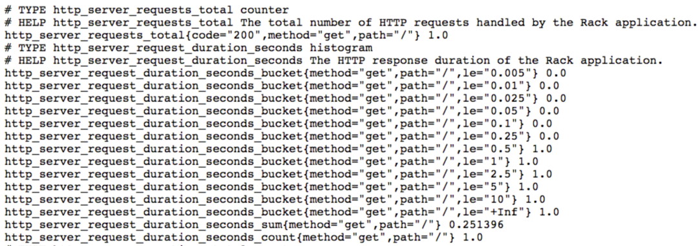
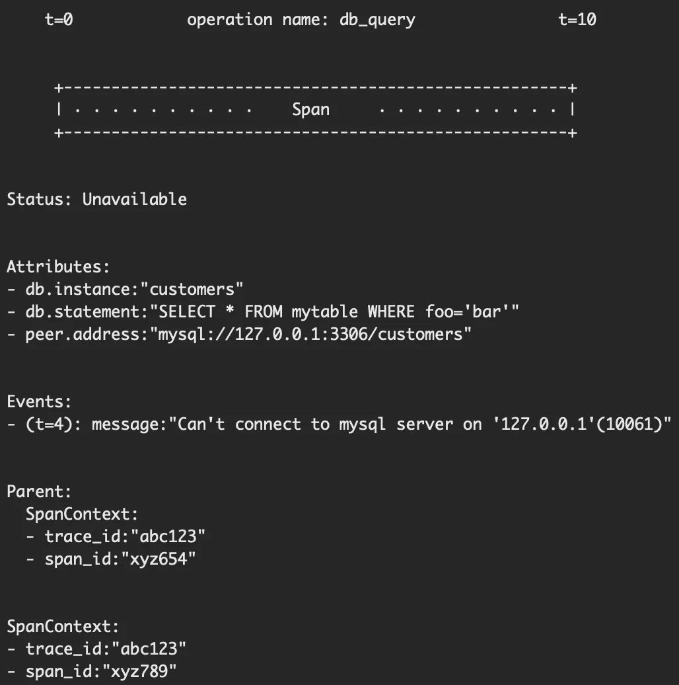
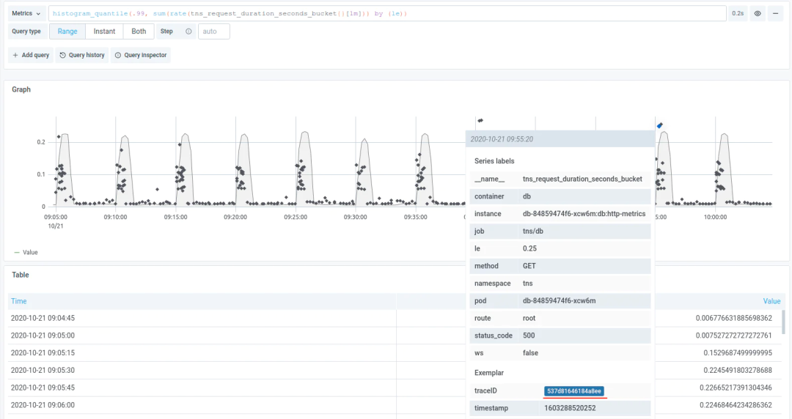

第六节 聊聊可观测性之数据模型
在 201x 年，随着容器技术的出现，容器的部署方式逐渐被各大互联网公司采用，相比物理机/虚拟机，容器的好处是环境隔离、轻量、快速。
但是管理容器是一件复杂的事情，后来出现了 Kubernetes，成为了事实上的容器管理标准，目前各大公司都在使用 Kubernetes。
因为容器和 Kubernetes 降低了服务（应用）的部署和升级成本，所以催生了「微服务」的概念，服务从「单体复杂服务」向「多个简单服务」演变，在之前，需要着重考虑服务内的架构设计，单个服务对外提供尽可能多的能力，而在微服务中，会直接把单个服务拆分成多个服务，服务之间用 API 调用。
这里也可以看到，在微服务中，架构设计的重要性降低，API 设计的重要性提高。
另外，拆分出微服务后，编程的难度事实上降低了，对编程人员的要求也降低了。
这说明一个事实，随着基础设施的不断发展，会有越来越多的「编程能力」沉淀成基础设施，使编程的难度不断降低：软件开发不断向简单的方式发展。
但是，随着微服务的发展，服务变得太多了，管理负责度又上升了，比如怎么去解决服务发现的问题、怎么控制流量、服务之间怎么做隔离，服务状态怎么观测等等。这时候又出现了「服务治理」的概念，关于服务治理，有一个新的词：Service Mesh，现在事实标准是 Istio。
概述
可观测性是为了应对微服务的复杂场景下发明出来的一个词，本质上是为了衡量系统运行的状态，可观测性是服务治理的一个维度，和功能性、可测试性、可运维性一样。
一般常说可观测性包含三个度量角度：Metric、Logging、Tracing，其实还有一个：Profiling。
- Metric：指标，对系统中某一类信息的聚合统计，比如 QPS、延迟、错误率等。
- Logging：日志，对系统所做行为的一种记录，它是离散的，没有相关性，为了区分这种记录的重要程度，会分级别（DEBUG、INFO、WARN、ERROR、FATAL）。
- Tracing：调用链，它反映的是请求经过某个组件的运行情况，经过组件的数据叫做 Span，Span 可以体现经过组件的状态、一些关键属性和事件、上下文信息。Span 之间通过 Trace ID 关联。
- Profiling：一般叫做 Continuous Profiling，持续分析，它反映的是程序内部的运行状态，比如栈调用、执行时间等。可以把 Profiling 可视化成火焰图方面分析问题。
一般来说，基于这些度量处理故障的流程是：Metric → Tracing → Logging → Profiling
数据模型
在 Tracing 领域，之前有两个项目，一个是 OpenTracing，它是一个规范，
- Jaeger 就是基于 OpenTracing 的开源实现，
- 另一个是 OpenCensus，它是 Google 开源的度量工具。
这两个项目功能高度重合，在 CNCF 主导下合并成了 OpenTelemetry，而 OpenTracing 和 OpenCensus 也不再维护。
当然 OpenTelemetry 不止做 Tracing，还覆盖 Metric 和 Logging，它的目标是统一可观测性的标准协议，包括数据模型、API 规范、多语言 SDK、采集器。
OpenTelemetry 只做统一的协议和规范，具体数据的后端存储和展示不是它的范围。协议和规范是可观测性对外暴露的「接口」，它的统一对于使用方来说是巨大的好处，目前来看，OpenTelemetry 未来会成为事实标准。
为了对接不同的后端实现，OpenTelemetry 提供了各种 Exporter，比如为对接 Prometheus 提供了 Prometheus Exporter，对接 Cortex 和 Thanos 提供了 Prometheus Remote Write Exporter，对接 Loki 提供了 Loki Exporter，对接 Jaeger 提供了 Jaeger gRPC Exporter。
不过，目前 OpenTelemetry 还不成熟，本文的数据模型基于我们事实上使用的后端实现来讨论。
- Metric 我们使用分布式 Prometheus 方案 Cortex，数据模型和 Prometheus 一致
- Logging 我们使用 Loki
- Tracing 我们使用 Grafana Tempo，Tempo 本身兼容 Zipkin、Jaeger、OpenTelemetry 等协议，所以 Tracing 直接采用 OpenTelemetry 的数据模型
- Profiling 的后端实现基本可以复用 Loki，数据模型也和 Logging 类似
先看 Metric，它的数据模型：LabelSet + Timestamp + Number
- LabelSet 就是 Series，是若干个 label name / value 组合，指标名称也是一个 label name / value。
- Timestamp 是时间戳，精度是毫米。
- Number 是数值，类型是 float64。
下面是一个 Metric 例子：

另外，Prometheus 内置几种 Metric 类型，包括 Counter、Gauge、Histogram、Summary，Counter 是自增的，Gauge 可增可减，Histogram 是直方图，Summary 是摘要，Histogram 和 Summary 区别是 Histogram 需要通过 _bucket 来计算 P 值，而 Summary 在客户端直接计算好 P 值，直接存储即可。
另外，Prometheus 还有很多内置函数，来做 Metric 的聚合，这里不再赘述。
再看 Logging，数据模型：LabelSet + Timestamp + String
和 Metric 类似，只是 Number 换成了 String，Timestamp 精度是纳秒。
在 Loki 中，使用 Logql 语法查询日志（和 Promql 类似），下面是一个例子：
{container="query-frontend",namespace="loki-dev"} |= "metrics.go" | logfmt | duration > 10s and throughput_mb < 500
下一个是 Tracing，Tracing 比较复杂：Operation Name + Start / End Timestamp + Attributes + Events + Parent + SpanContext
- Operation Name：操作名
- Start / End Timestamp：开始和结束时间
- Attributes：KV 对，包括 Status（比如 OK、Cancelled、Permission Denied）、
- SpanKind（CLIENT、SERVER、PRODUCER、CONSUMER、INTERNAL 等）、自定义信息等
- Events：若干个元组列表，每个元组包括 timestamp、name、Attributes，用于记录一系列重要事件
- Parent 包含父亲的 Span ID、Trace ID
- SpanContext 包含自身的 Span ID、Trace ID
下面是一个例子：

最后看 Profiling，数据模型：LabelSet + Timestamp + []byte
Profiling 的数据格式是 protocol buffers，所以用 []byte。
上面介绍了四种数据模型，其实在实际场景中，它们之间也会互相融合，下面说几种常见的融合场景。
第一，Metric 和 Tracing 融合。
这里要用到 Exemplar，Exemplar 最早被用在 Google 的 StackDriver 中，后面成为了 OpenMetrics 标准的一部分，在应用通过标准 /metrics 端口暴露 Metric 时，Exemplar 信息也会被一起暴露。
Prometheus 目前已支持 Exemplar，Prometheus 通过 /metrics 采集数据时也会把 Exemplar 存储下来，并暴露单独的 API 来获取 Exemplar 信息。
$ curl -g 'http://localhost:9090/api/v1/query_exemplar?query=test_exemplar_metric_total&start=2020-09-14T15:22:25.479Z&end=020-09-14T15:23:25.479Z'
{
"status": "success",
"data": [
{
"seriesLabels": {
"__name__": "test_exemplar_metric_total",
"instance": "localhost:8090",
"job": "prometheus",
"service": "bar"
},
"exemplars": [
{
"labels": {
"traceID": "EpTxMJ40fUus7aGY"
},
"value": 6,
"timestamp": 1600096945479,
"hasTimestamp": true
}
]
},
]
}
借助 Exemplar，可以把 Trace ID 作为一个 label pair 加入 Exemplar 中，从而可以在Prometheus 查询到 Tracing 的信息，从而将 Metric 和 Tracing 连接起来。

第二，Logging 和 Tracing 融合。
只要使用带有 Tracing 库的 SDK，每个请求都会带上 Trace ID，并把这些 ID 打在日志中。
通过 Trace ID 可以定位到一个唯一的 Tracing， 跳转到 Tracing 系统的 UI 进行查询。
第三，Metric 和 Profiling 融合。
基于 Exemplar，把 Profiling ID 也放入 Exemplar 中，Prometheus 支持存储和查询即可。
至于展示，可以在 Grafana 上开发一个 pprof 的 Panel 插件，这样可以展示 Profiling。